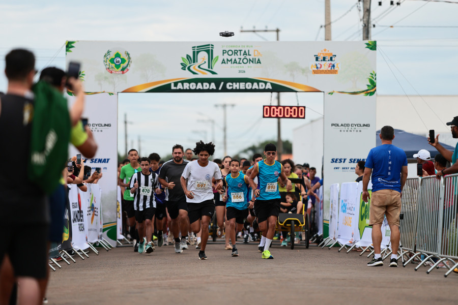
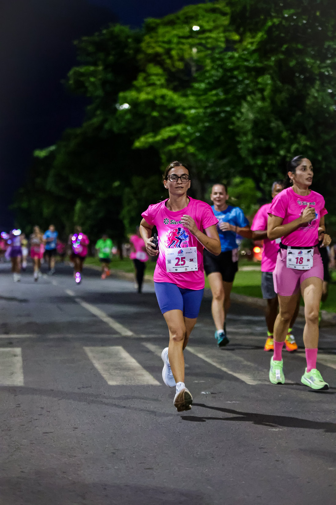
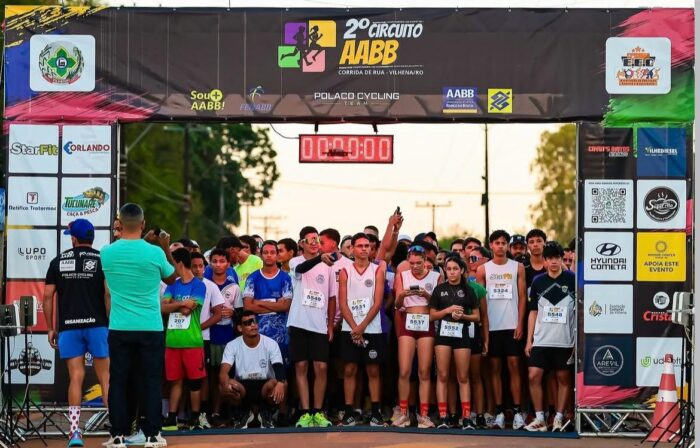
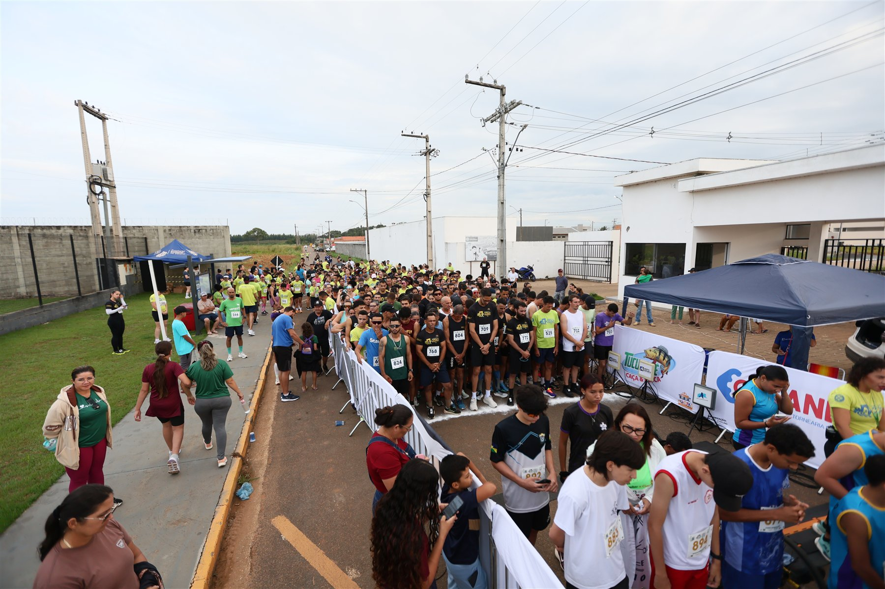
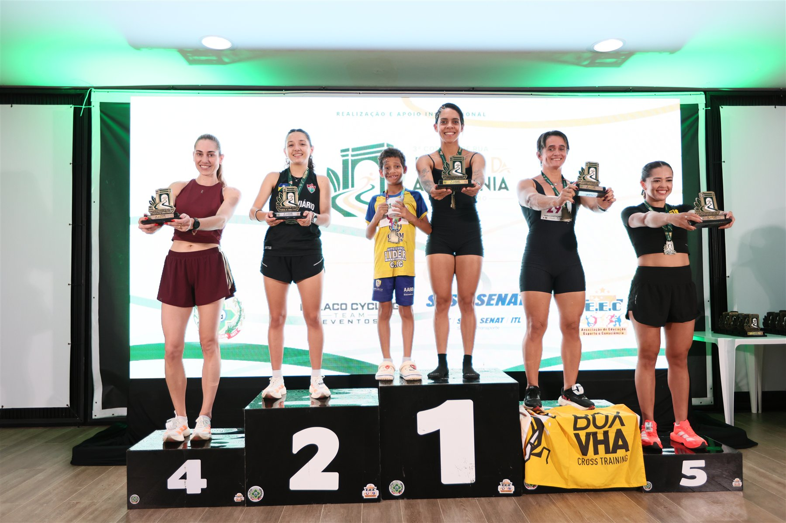
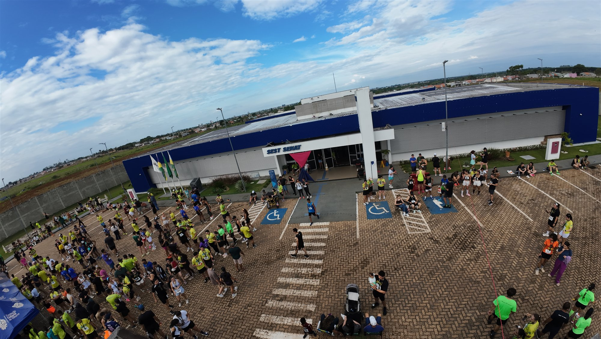
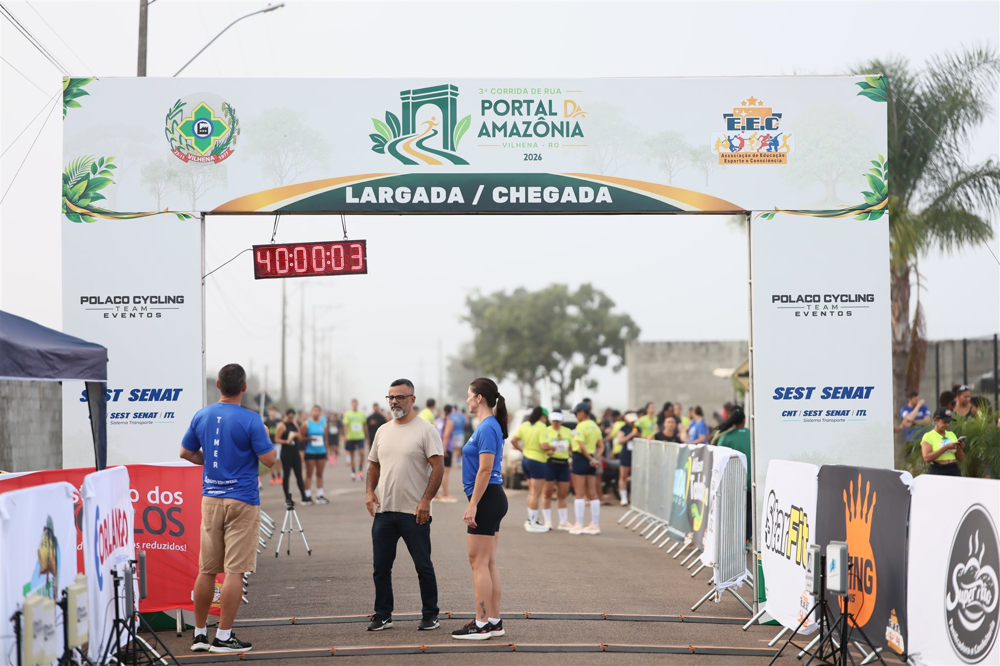
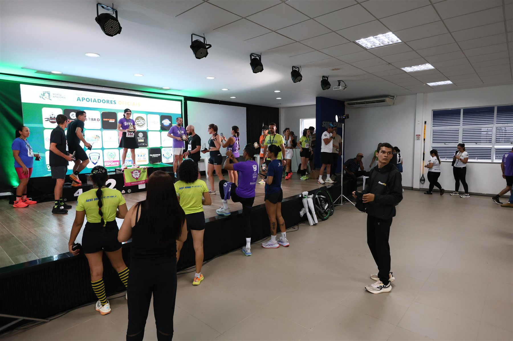
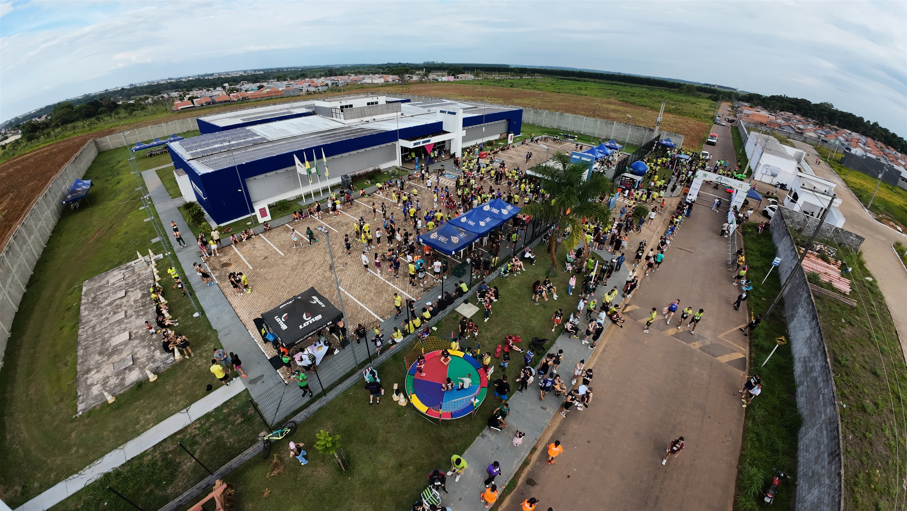

01
Concepção e planejamento
Objetivos, formato, orçamento, regulamentos, percursos e cronogramas.
AEEC e Polaco Cycling Team Eventos: experiência na produção esportiva, compromisso com a comunidade e histórias construídas em Vilhena.

 AEEC
AEEC Polaco Cycling
Polaco CyclingPlanejar, reunir pessoas, transformar ideias em experiências reais. É assim que construímos competições e ações de impacto local.
A boa organização não aparece apenas no pórtico. Ela está em cada detalhe que faz o evento acontecer.
A AEEC atua em esporte, educação, inclusão e projetos comunitários. A Polaco Cycling Team Eventos reúne experiência operacional em competições e produção esportiva, com origem no ciclismo e consolidação nas corridas de rua.
Juntas, desenvolvem projetos próprios e colaboram com entidades, escolas, instituições e empresas na organização de eventos.

Um registro da comunidade esportiva que acompanha a trajetória dos eventos.
Fotografia do acervo fornecido pela organização · 17/11/2024Cinco edições realizadas entre 2024 e 2026. Abra cada uma para consultar números, fotografias e fontes, sem confundir inscrições com concluintes.
A primeira edição da sequência atual da Portal da Amazônia marcou a entrada desse projeto no calendário das corridas de rua de Vilhena. Não se confunde com provas anteriores de outras organizações que utilizaram nome semelhante.
O primeiro Circuito AABB de Corrida de Rua em Vilhena reuniu a comunidade esportiva em um evento da AABB/FENABB, com atuação da AEEC e da Polaco no planejamento e na organização.

A segunda edição ampliou a trajetória da Portal da Amazônia. O painel administrativo da Agito registra 766 inscrições no sistema, das quais 660 estavam confirmadas. Esses números não devem ser confundidos com concluintes.


A segunda edição reuniu percursos de 5 km e 10 km, categoria infantil e participação de atletas PcD. A reportagem publicada após a prova registrou 925 inscrições confirmadas, incluindo 40 vagas gratuitas para estudantes da rede estadual.

Com 895 inscrições confirmadas, a terceira edição reuniu atletas adultos, Kids, PcD e participantes da modalidade escolar. A Central do Atleta concentrou regulamento, consulta de inscritos e informações ao público.



A sequência atual da Corrida Portal da Amazônia começou em 2024. Eventos de outras organizações com nome semelhante não integram essa contagem.
2024
Início da série atualPortal da Amazônia
5
Corridas de ruaedições identificadas até 2026
2
Eventos previstosno calendário de 2027
1
Compromisso constantevalorizar pessoas por meio do esporte
Estrutura de trabalho pensada para entregar o evento completo. As atividades especializadas são organizadas e contratadas conforme o escopo.


Objetivos, formato, orçamento, regulamentos, percursos e cronogramas.
Estrutura, sinalização, kits, fluxos operacionais e equipes de apoio.
Informações ao público, soluções online, peças gráficas e atendimento aos atletas.
Contratação e acompanhamento de cronometragem, saúde, segurança e demais serviços necessários.
Montagem, alinhamento das equipes, gestão do percurso e execução no dia.
Resultados, fotografias, registros e avaliação das entregas.

Organização, acolhimento e atenção aos detalhes: é o trabalho que transforma uma prova em um encontro da comunidade.
Vista aérea da estrutura da 3ª Portal da Amazônia, realizada no SEST SENAT em novembro de 2026 · Acervo da organização.
Previsões de realização. Datas exatas e formatos ainda serão confirmados com as instituições envolvidas.
Resultados, galerias, notícias e registros de ações comunitárias organizados por tema. As fotografias exibidas neste portfólio são de eventos reais.
AEEC & Polaco Cycling Team Eventos
Vilhena · Rondônia
Apresentação institucional destinada a entidades públicas, empresas, instituições e organizações esportivas.